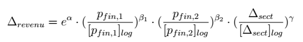
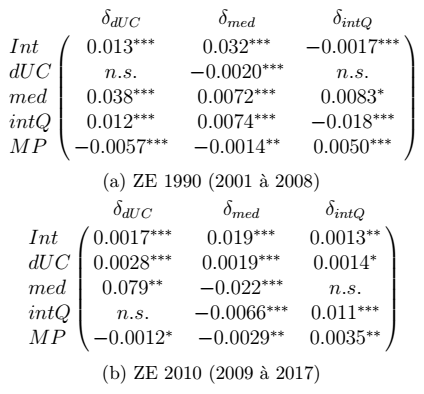

Analyse dynamique de la polarisation des territoires français
Ayant identifié quel indicateur quantitatif traduit la polarisation des revenus entres territoires, nous allons à présent chercher à en identifier les causes dynamiques. Nous allons donc faire appel à une démarche de régression pour identifier les prédicteurs de la polarisation des revenus sur la polarisation de la productivité.
Tout d'abord, nous chercherons à établir les causes de la dynamique de polarisation à l'échelle française. Nous allons donc régresser notre mesure de polarisation des revenus sur une mesure dérivée de polarisation de la productivité (traduisant une tendance "naturelle" des revenus à s'aggréger là où la productivité est supérieure) et des proxy de pression financière international (représentant au contraire une cause institutionnelle d'aggrégation des revenus). Si nous avons accès à des proxy de pression financière de bonne qualité, c'est à dire la part des capitaux étrangers respectivement dans la dette d'État et dans les actions du CAC 40, le seul proxy de productivité auquel nous avons accès au niveau des ZE sur toute la période est la part du secteur tertiaire dans l'emploi local. Nous cherchons donc à établir les valeurs des paramètres dans la relation suivante :

Les résultats ne sont significatifs pour aucune des variables de pression financière, et montrent un effet négatif de la polarisation de la composition sectorielle sur celle des revenus. Ce résultat s'explique bien par le transfert de richesse vers les ZE métropolitaine à mesure que l'économie dans son ensemble se tertiarise, en raison de leur avantage comparatif plus élevé dans ce secteur. Il traduit donc plus le manque de fiabilité de notre indicateur de polarisation qu'un effet adverse de la productivité sur les revenus. Nous allons donc plutôt nous attacher à caractériser les dynamiques locales de l'agglomération des richesses, de sorte à comprendre précisément quels en sont les mécanismes.
Nous avons accès au niveau local à un éventail de données traduisant différents aspects du processus de métropolisation : densité de population (traduisant le niveau d'intégration métropolitaine d'un territoir), revenu médian (caractérisant le niveau de revenus associé à l'accès au travail local), quotient interdécile (traduisant la polarisation au sein du territoire), et enfin potentiel de marché (traduisant l'accès du territoire à des opportunités d'export). Nous cherchons à prédire sur la base de ce jeu de variables la croissance annuelle des trois premières, nous permettant d'établir le tableau suivant.

On y observe tout d'abord que, tout le long de la période d'étude, le potentiel de marché exerce un effet antagoniste sur la croissance du revenu médian, mais favorise au contraire celle du quotient interdécile. Cela peut traduire un effet de captation des flux économiques interrégionaux par la fraction la plus riche des populations, c'est à dire un effet dynamique de polarisation. Qui plus est, si la croissance du quotient interdécile est auto-inhibée et celle du revenu médian auto-catalysée jusqu'à 2008, c'est l'inverse à partir de 2009. En d'autres termes, les revenus du travail cessent de croître en proportion de l'échelle de l'économie urbaine, au profit de ceux des rentes.
Notre analyse dynamique suggère donc l'existence d'un processus de polarisation de longue date, lequel se serait découplé de l'économie productive à l'occasion de la crise financière de 2008. À défaut d'arbitrer du rôle de l'État dans la polarisation, ce résultat jette un doute sur la stabilité à long terme du développement actuel de l'économie urbain.